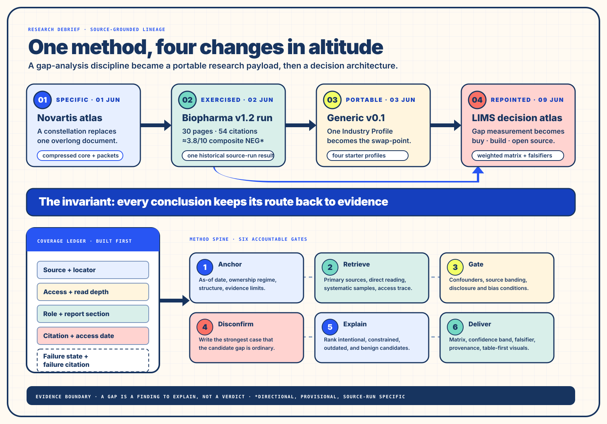

From summary to inspectable comparison
Claims, execution signals, gaps, non-gaps, estimates, and missing evidence become separate objects rather than one fluent narrative.
Research debrief · Evidence architecture · Human + AI collaboration
The NEG method compares what an organization says it is doing with observable execution evidence, then slows the judgment down. Every candidate divergence must survive confounder gates, a disconfirmation pass, competing explanations, a peer baseline, and a source trail. The result is a finding to explain—never a verdict smuggled in as a score.
Executive read
The method began as a Novartis-specific constellation of small research packets, was tested in a live biopharma run, became a parameterized industry-agnostic payload, and was then re-pointed toward a LIMS build-or-buy decision. Its portable value is the invariant discipline: evidence coverage is declared before analysis, inaccessible sources remain visible, benign explanations stay in the probability set, and each output carries the evidence that could falsify it.
Collaboration lineage
The dated collaboration record places the live Novartis run before the generic v0.1 payload was finalized. That matters: the generic atlas was an abstraction informed by observed behavior, rather than a template detached from use. The LIMS extension then kept the research discipline while changing the keystone output from a gap matrix to a weighted decision matrix.

| Stage | Research form | What changed | What remained invariant |
|---|---|---|---|
| 01 · Novartis-specific atlas | A constellation with a compressed core and one concern per packet. | One long document became core definitions, a method spine, research packets, output specifications, and a sibling template. | Public claims are compared with public evidence; requester attributes never count as evidence. |
| 02 · Live biopharma run | A full Novartis research artifact produced from the biopharma payload. | The run exposed visual-rendering ambiguity and a weak non-obvious-peer result while validating the ledger and matrix structure. | Coverage, confounders, bounded intent, benign explanations, and the technology section held. |
| 03 · Generic v0.1 | A self-contained, industry-agnostic payload with one Industry Profile swap-point. | Domains, source rosters, units, confounders, peer seeds, and visual affinities became parameters; four starter profiles shipped. | The section order, scoring discipline, output contract, and completion gate stayed comparable. |
| 04 · LIMS build-or-buy | A decision constellation spanning commercial buy, bespoke build, and open-source assembly. | The keystone became a weighted candidate × dimension decision matrix carrying evidence, confidence, and falsifiers. | As-of framing, coverage ledger, source bands, bias gates, estimation discipline, table-first visuals, and provenance travelled forward. |
Method spine
The method prevents a fluent synthesis from outrunning its evidence. A score appears only after a source environment has been named, coverage has been recorded, ordinary explanations have been tested, and the strongest case against the gap has been written. Even then, the number sizes an observed divergence; it does not quantify intent or certainty.
Stamp an as-of date. Name ownership and disclosure regimes, structure changes, segments, and evidence limits before interpreting trends.
Record source, locator, access, read depth, analytical role, report section, citation, and the exact state of every failed retrieval.
Prefer primary sources, follow citations to origin, sample large collections systematically, and label estimates with method and confidence.
Test macro effects, normal execution lag, disclosure changes, source self-selection, and other sector conditions before naming a gap.
Write the strongest non-gap case, then distribute probability across intentional, constrained, outdated, and benign explanations.
Pair each finding with evidence, uncertainty, confounders, baseline position, and the next evidence that would change the read.
A divergence fully explained by a confounder exits the gap set. A silence only becomes meaningful when comparable organizations disclose what the target omits.
| Field | Question it answers | Completion condition |
|---|---|---|
| Source name + address attempted | What was sought, and where? | A human-readable name and verifiable locator travel together. |
| Access + read depth | Was it reached, and how much was actually read? | Yes/no is paired with full, sampled, or not reached. |
| Role + report section | Why did this source matter? | The row names the analytical use and where it appears. |
| Citation | Can another reader recover the evidence? | Every accessed row carries a citation and access date. |
| Failure state + failure citation | What resisted retrieval? | Every inaccessible row records the exact barrier and evidence of the failed attempt. |
Enterprise operating surface
A research payload is also a coordination instrument. It moves effort toward source access, comparable baselines, explicit uncertainty, and expert challenge. AI collaborators can widen retrieval and structure evidence; accountable people retain the judgments that shape material decisions, regulatory posture, interpretation, and investment.
Claims, execution signals, gaps, non-gaps, estimates, and missing evidence become separate objects rather than one fluent narrative.
Primary-source access, sampling, peer selection, subject-matter challenge, and provenance become visible work rather than invisible overhead.
Executives, practitioners, analysts, engineers, quality and regulatory partners, procurement, and AI collaborators read different consequences from the same evidence set.
| Population | Consequence carried | Artifact needed | Decision retained by people |
|---|---|---|---|
| Executive and investment owners | Allocation, strategic coherence, option value, and the cost of waiting. | Plain-language posture, comparative band, uncertainty statement, and falsifiers. | Which divergence or decision merits capital, sponsorship, or further proof. |
| Researchers and analysts | Coverage, provenance, estimation, sampling, and reproducibility. | Coverage ledger, claim-evidence matrix, source log, and estimate ledger. | Whether coverage is adequate and which inference the evidence can support. |
| Technology, data, and engineering | Capability evidence, maintenance reality, operating constraints, and delivery signals. | Dedicated technology section, capability map, timeline, and architecture evidence. | What can be built, sustained, integrated, recovered, and changed responsibly. |
| Practitioners, quality, and regulatory partners | Workflow truth, safety, validation, regulated meaning, and constitutive silence. | Domain evidence, confounder log, exceptions, decision-bias gates, and contextual profile. | Whether an apparent benefit or risk survives operational and regulatory reality. |
| Procurement, finance, and legal | Commercial exposure, ownership, lock-in, total cost, disclosure regime, and exit. | Financial evidence, ownership frame, TCO model, risk register, and decision matrix. | Which contractual and economic conditions make an option viable. |
| AI collaborators | Retrieval breadth, normalization, candidate generation, and structured synthesis. | A bounded run packet, explicit source schema, completion gate, and named receiver. | None: consequential interpretation and authorization stay with accountable humans. |
Reusable run packet
The source payload is the executable specification. This smaller orientation packet helps a team assemble the conditions before handing the full payload to a research collaborator. Each disclosure changes what can be known, so the setup names the world before it asks for findings.
Use the full generic NEG payload for [target].
Fill the Industry Profile for [sector].
Build the coverage ledger before analysis.
Run all ten research demands through [as-of date].
Deliver the matrix, baseline, uncertainty statement,
source log, estimate ledger, tables, visuals, and falsifiers
for [named human receiver and decision].For each material finding, request the strongest disconfirming case, ranked candidate explanations, the evidence that would move their probabilities, and a clear account of what remains unreachable or estimated.
From research finding to enterprise decision
The NEG family asks how closely narrative and execution evidence track. The LIMS constellation asks which path should carry regulated laboratory work: buy a commercial system, build in-house, or assemble on an open-source base. That new question changes the scoring object while retaining the evidence architecture.
| Decision dimension | Evidence surface | Cross-functional receiver |
|---|---|---|
| Functionality + interoperability | Sample lifecycle, workflow, instruments, ELN, HL7/FHIR/ASTM, import/export, and standards conformance. | Lab operations, science, clinical informatics, architecture, and integration engineering. |
| Compliance + validation burden | GxP, 21 CFR Part 11, CLIA/CAP, HIPAA, ISO 17025, and validation-package evidence. | Quality, regulatory, privacy, security, clinical operations, and validation engineering. |
| Architecture + maintenance | Deployment model, APIs, versioning, reliability, deprecation, security, maintenance liability, and recovery. | Platform, security, SRE/operations, data, and engineering leadership. |
| Economics + option value | Multi-year TCO, implementation, validation, training, exit, portability, lock-in, and time-to-value. | Executive sponsors, finance, procurement, legal, program leadership, and operating owners. |
| Vendor + open-source health | Ownership, financial health, roadmap, support, license, contributor activity, issues, forks, and public maintenance signals. | Procurement, technology diligence, engineering, legal, and long-term service owners. |
What the live collaboration taught
The method is self-demonstrating. The coverage ledger is specification by example; its output contract is a purpose-and-activity map for the run; its affirmative language describes the desired action directly. The live run then supplied a concrete test: which instructions held, which were interpreted loosely, and which conditions needed to become more explicit.
The report began with the coverage table. One robots-blocked source carried a failure citation, making the retrieval limit inspectable rather than silent.
All required columns appeared, benign explanations stayed present, confounders and falsifiers travelled with findings, and intent remained bounded.
Ten requested visuals appeared only as unicode or text tables. The next payload made the dual form explicit: table first, then rendered graphic from the same plotting-ready data.
The run chose obvious large-cap peers and missed the required emerging set. Later wording required at least three non-obvious peers with justification.
Evidence Boundary
Read From Narrative to Execution — A Deep-Research Collaboration Atlas to see a research method separate reusable procedure, situated instance, execution evidence, and decision use.